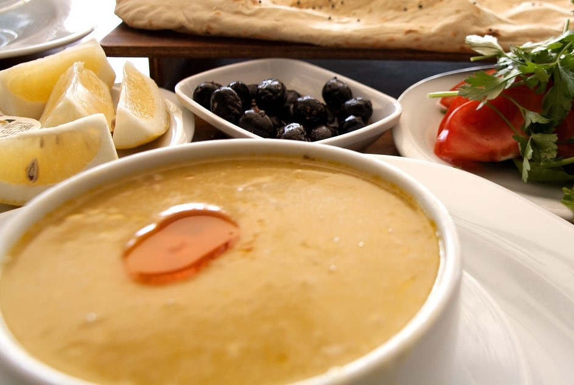
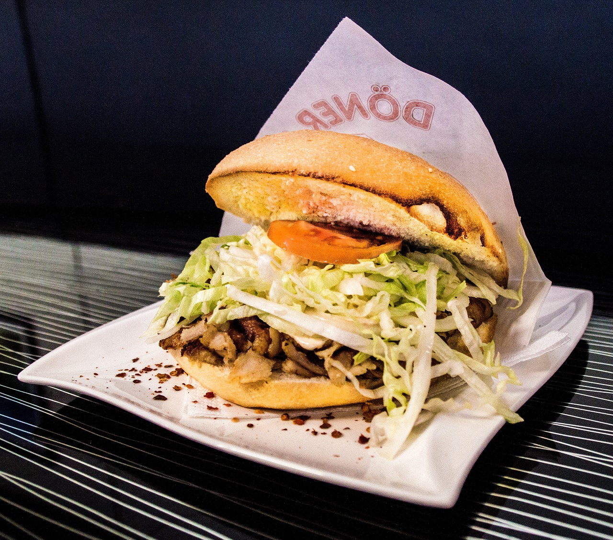

Mercimek Çorbası

Die Mercimek Çorbası ist eine würzige Linsensuppe, die gerne in der Türkei gegessen wird.
Wie so oft hat natürlich jeder Haushalt sein eigenes Rezept für diese türkische Linsensuppe.
Hauptbestandteil sind natürlich Linsen, aber auch weitere Aromen wie Zitrone und Minze verleihen
diesem Bericht eine leichte orientalische Note.
Burrito

Ein Burrito ist ein köstliches mexikanisches Gericht, das aus einer großen Tortilla besteht, die mit verschiedenen Zutaten gefüllt und gerollt wird.
Der Begriff "burrito" stammt aus dem Spanischen und bedeutet wörtlich übersetzt "Kleiner Esel".
Die genaue Herkunft des Burritos ist umstritten, aber es wird angenommen, dass es seinen Ursprung im Norden Mexikos hat.
Traditionell besteht ein Burrito aus einer großen Weizentortilla, die mit Reis, Bohnen, Fleisch (wie Rindfleisch, Hühnchen oder Schweinefleisch), Käse, Guacamole, saurer Sahne und Salsa gefüllt wird. Die Zutaten können je nach persönlichem Geschmack und regionalen Variationen variieren. Vegetarische oder vegane Burritos sind ebenfalls beliebt und können mit Gemüse, Tofu oder anderen pflanzlichen Proteinen gefüllt sein.
Döner Kebab

Döner Kebab bedeutet auf Deutsch „sich drehendes Grillfleisch“ und ist das wohl bekannteste türkische Gericht in Deutschland.
Hauptbestandteil sind Fleischscheiben, die gut gewürzt und schichtweise auf einen großen Fleischspieß aufgetragen werden.
Als Fleisch werden in Deutschland überwiegend Lamm oder Hähnchen angeboten, aber auch Varianten mit Hammel- oder Lammfleisch sind beliebt.
Fisch hat nichts im Döner zu suchen. Döner wird meistens in einem dicken oder dünnen Fladenbrot (Dürüm Döner) angeboten.
Dazu gibt es am besten Reis, Soße und gegebenenfalls auch Fetakäse.
Sushi Rolls

Sushi ist ein japanisches Gericht, das aus gekochtem und gesäuertem Reis besteht, der mit rohem oder gekochtem Fisch, Meeresfrüchten,
Gemüse oder Eiern belegt wird. Der Reis wird mit Essig, Zucker und Salz gewürzt und mit verschiedenen Zutaten wie Lachs,
Thunfisch, Garnelen, Gurken, Avocado oder Omelett belegt. Sushi wird oft mit Sojasoße, Wasabi und eingelegtem Ingwer serviert.
Es ist bekannt für seine kunstvolle Präsentation, Vielfalt und frischen Geschmack und wird in Sushi-Restaurants auf der ganzen Welt genossen.